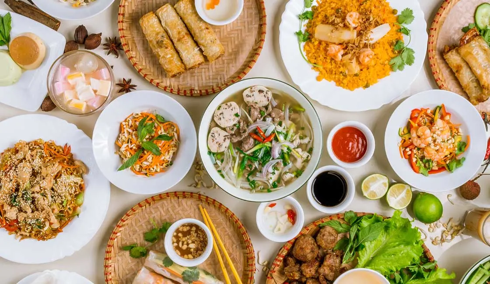

Simple Vegan Pho Recipe
:max_bytes(150000):strip_icc()/chicken-pho-14-FT-RECIPE1222-b82ecb87d5fa4bf0af1b4468c807a560.jpg)
Pho soup is a popular Vietnamese rice noodle soup and with this recipe you can easily make the homemade vegan version without meat! Made of a hearty flavorful broth, gluten-free rice noodles, crispy tofu, and vegetables, this soup is not only delicious, but also very healthy!
Not only does this dish have amazing flavor profiles but its nutritional value should not be overlooked either. Pho generally contains lean proteins like beef or chicken along with plenty of vitamins and minerals from the fresh vegetables that are often added for extra texture and flavor.
Ingredients
- 24 dried shiitake or flower mushrooms
- 4 medium onions
- 1 large daikon peeled and cut as coins, 1″ thick
- 3 inches of ginger washed well, halved and pounded with a pestle or heavy object to release the juices
- 1 large or 2 medium carrots peeled and cut into 2-3 inch sized chunks
- 1 head of cabbage quartered
- 1 apple or pear cored and halved (I used gala, but any that keeps its shape well after cooking is good)
- 16 cups of water 4 L
- 1 pint king oyster mushrooms sliced into 2 inch slivers
- 2 tbsp olive oil
Instructions
Make the broth
Cut off the tops and bottoms of onions and peel the onions. Peel and cut daikon. In a large pan over medium heat, dry sear the onions, peeled ginger, quartered cabbage, and daikon to get a caramelized browned edge. If you have a grill or BBQ, it would taste better to do this on there instead of the dry sear on a pan. They'll burn/char and that's okay, that's how you get a good depth of flavour. This will take 10-15 minutes.
Alternatively you can broil everything in the oven, flipping until both sides gets some char. This will also take about 15 minutes. Meanwhile in another non-stick pan, cook the slivered king oyster mushrooms with 1 tsp of mushroom broth powder until browned and caramelized.
To a large stock pot with at least 4 L of water, add the caramelized king oyster mushrooms (and dried shiitake mushrooms), charred daikon, onion, cabbage, carrot, apple and ginger and water and bring to a boil. Lower to a simmer and cover. Let simmer for at least an hour. Ideally up to 5-6 hours for more depth. After about 45 min-1 hour, remove the onion and apple since they will completely dissolve if you cook it longer.
Toast the spices
Meanwhile, in a dry skillet, toast the spices (star anise, coriander seed, fennel, cardamom, cassia bark and cloves) for about 2-3 minutes until fragrant. Remove from heat. About 15 minutes before serving, combine the toasted spices into a mesh bag, tea strainer/bag, or a sieve.
Lower into the pot and simmer for 10 minutes, careful not to lose the spices into the broth. Don't leave the spices too long or it will become bitter. Remove the spices.
Prepare to serve
Add the slices of tofu/fried tofu and Vietnamese sausage if using to heat them through. Add a tsp of vegetable oil to the broth if you're not adding fried tofu. The small about of oil adds a richness to the broth. Meanwhile, cook the pho noodles until al dente (so when you add the steamy broth, they're perfectly chewy and delicious!), drain and segment into servings.
It's easier to do this when they're freshly cooked, otherwise they'll drain into one big clump and be hard to divide. Remove everything but the mushrooms from the pot. Start seasoning the broth with mushroom broth powder (or salt), vegan fish sauce, yellow rock sugar, MSG, and vegan beef bouillon cubes.
Start out a little of each ingredient at a time until you have the full-bodied broth you like. Pour broth over pho noodles, garnishing the tofu, sliced mushrooms (from the broth), vegan Vietnamese sausage, culantro leaves, Thai basil, bean sprouts, cilantro, green onion and a squeeze of lime. Add hoisin sauce and sriracha to taste!
Notes
When I first published this recipe, I didn't have access to many of the vegan broth enhancers that are available now. After years of remaking and tweaking this recipe, I've improved the broth with mushroom broth powder, vegan fish sauce, rock sugar, MSG, and vegan beef bouillon. The biggest game changers for this recipe were the addition of vegan fish sauce and sugar.
The vegan fish sauce adds a really big layer of depth, and the sugar rounds out the salt. You can decide what amounts of each ingredient work well for you, it will depend on how salty you like your broth, but this soup really does require a full-bodied broth to bring the noodles and toppings together. Don't skimp on the salt AND sugar. Worst case, you can add water if it's too salty.
Nutrition
Calories: 342kcal | Carbohydrates: 23g | Protein: 3g | Fat: 29g